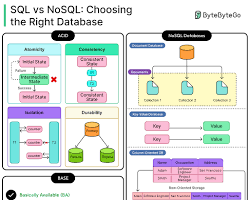
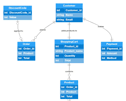
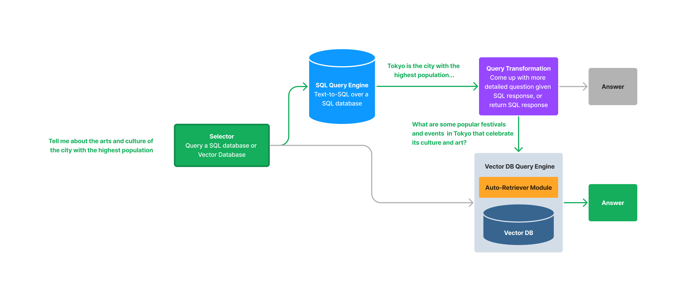

데이터베이스(DB)
기초 이해
1. DB란 무엇인가?
데이터베이스(Database)는 여러 사람이 공유하여 사용할 목적으로
통합하여 관리되는 데이터의 집합
- 중복성 최소화: 엑셀 파일처럼 여기저기 흩어져 있는 것을 방지
- 무결성 유지: 데이터의 정확성과 일관성 보장
- DBMS: 이런 DB를 관리하는 소프트웨어 (MySQL, PostgreSQL, Oracle 등)
DB의 기본 아키텍처

사용자의 애플리케이션은 직접 데이터를 조작하지 않고,
백엔드 서버(API)를 거쳐 DBMS에 쿼리(Query)를 요청하여 데이터를 다룬다.
2. RDBMS (관계형 DB)
데이터를 행(Row)과 열(Column)로 이루어진 2차원 테이블로 저장하고,
테이블 간의 관계(Relationship)를 정의하는 표준적인 DB
a. 테이블 (Table) 구조 심화
컬럼마다 적절한 데이터 타입(Data Type)을 지정
| user_id (INT, PK) |
username (VARCHAR) |
email (VARCHAR, UNIQUE) |
status (ENUM) |
created_at (TIMESTAMP) |
|---|---|---|---|---|
| 1001 | alice_99 | alice@example.com | ACTIVE | 2023-10-25 10:23:01 |
| 1002 | bob_dev | bob.dev@test.org | INACTIVE | 2023-10-26 14:11:55 |
- 스키마 (Schema): 테이블의 구조, 데이터 타입, 제약조건에 대한 명세
- 제약조건 (Constraints): 데이터의 무결성을 지키기 위한 규칙 (예: 이메일은 중복 불가 `UNIQUE`)
b. 기본키(PK)와 외래키(FK)
테이블 간의 참조 무결성(Referential Integrity)을 보장
[Users 테이블]
| user_id (PK) | username |
|---|---|
| 1001 | alice_99 |
| 1002 | bob_dev |
[Orders 테이블]
| order_id (PK) | user_id (FK) | total_amount |
|---|---|---|
| 55021 | 1001 | $ 150.00 |
| 55022 | 1001 | $ 45.50 |
- Primary Key: 각 레코드를 고유하게 식별 (보통 AUTO_INCREMENT 사용)
- Foreign Key: 부모 테이블(Users)에 존재하지 않는 `user_id` (예: 9999)는 Orders 테이블에 절대 삽입될 수 없음
c. SQL 기초 (DDL, DML)
1. 테이블 정의 (DDL)
CREATE TABLE Users (
user_id INT PRIMARY KEY AUTO_INCREMENT,
username VARCHAR(50) NOT NULL,
email VARCHAR(100) UNIQUE,
created_at TIMESTAMP DEFAULT CURRENT_TIMESTAMP
);
2. 데이터 조작 (DML)
INSERT INTO Users (username, email)
VALUES ('charlie', 'char@xyz.com');
UPDATE Users
SET status = 'ACTIVE'
WHERE user_id = 1001;
d. JOIN (관계 기반 병합)
별칭(Alias)을 사용하여 여러 테이블의 데이터를 조건에 맞게 결합
SELECT u.username, o.order_id, o.total_amount
FROM Users u
INNER JOIN Orders o ON u.user_id = o.user_id
WHERE o.total_amount >= 100.00
ORDER BY o.total_amount DESC;
- INNER JOIN: 양쪽 테이블에서 결합 조건(ON)이 일치하는 행만 반환
- LEFT (OUTER) JOIN: 왼쪽 테이블의 모든 행을 유지하며, 일치하는 우측 데이터가 없으면 `NULL`로 채움
e. 트랜잭션과 ACID
결제와 같이 논리적으로 묶인 작업 단위에서 무결성을 보장하는 4가지 원칙
START TRANSACTION;
UPDATE Accounts SET balance = balance - 50000 WHERE acc_id = 'A';
UPDATE Accounts SET balance = balance + 50000 WHERE acc_id = 'B';
COMMIT; -- 둘 다 성공 시 반영 (실패 시 ROLLBACK)
- A (원자성, Atomicity): 쿼리 중 하나라도 실패하면 작업 전체를 취소 (All or Nothing)
- C (일관성, Consistency): 트랜잭션 전후로 데이터의 제약조건(예: 마이너스 통장 불가)은 항상 지켜져야 함
- I (고립성, Isolation): 진행 중인 트랜잭션의 '중간 상태'를 다른 트랜잭션이 읽거나 간섭할 수 없음
- D (지속성, Durability): Commit(완료)된 데이터는 시스템 전원/장애가 발생해도 디스크(WAL, Redo Log 등)에 영구 보존
f. Index (인덱스 구조)
데이터의 물리적 위치를 빠르게 찾기 위한 B-Tree 기반 구조입니다.
👍 장점
O(N)의 풀 스캔(Full Table Scan)을 O(log N)의 인덱스 스캔으로 바꿔 검색 속도를 극대화
👎 단점
데이터가 INSERT/UPDATE/DELETE 될 때마다 트리를 재정렬(Page Split 등)해야 하므로 오버헤드 발생 및 추가 스토리지가 필요
g. 데드락 (Deadlock)
복수의 트랜잭션이 서로 Exclusive Lock(배타락)을 점유한 채 대기하는 상태
발생 예시: Tx1이 1번 게시글을 잠그고 2번을 수정하려 대기 중인데, Tx2는 2번 게시글을 잠그고 1번을 수정하려 대기할 때 발생
👉 DBMS의 Deadlock Detector가 이를 감지하여 작업량이 적은 트랜잭션을 강제 Rollback(취소)
h. 정규화 (Normalization) 심화
데이터의 삽입/갱신/삭제 이상현상(Anomaly)을 방지하기 위해
함수적 종속성(Functional Dependency)을 기반으로 테이블을 무손실 분해하는 과정
① 제1정규형 (1NF)
조건: 모든 속성은 원자값(Atomic Value)을 가져야 하며, 반복 그룹이 없어야 한다.
❌ 1NF 위반 (다중 값)
| emp_id | name | tech_skills |
|---|---|---|
| E01 | Alice | Java, AWS, SQL |
✅ 1NF 적용
| emp_id | name | tech_skill |
|---|---|---|
| E01 | Alice | Java |
| E01 | Alice | AWS |
| E01 | Alice | SQL |
② 제2정규형 (2NF)
조건: 1NF 충족 및 기본키의 진부분집합에 종속되는 속성(부분 함수 종속)을 제거
❌ 복합키 [주문번호+상품코드] 중, '상품명'과 '단가'는 '상품코드'에만 완전 종속됨
| order_id | product_id | qty | product_name | unit_price |
|---|---|---|---|---|
| ORD-01 | P100 | 2 | MacBook | $2000 |
✅ 2NF 적용: 상품 원장 테이블 분리
| order_id (PK) | product_id (PK) | qty |
|---|---|---|
| ORD-01 | P100 | 2 |
| product_id (PK) | product_name | unit_price |
|---|---|---|
| P100 | MacBook | $2000 |
③ 제3정규형 (3NF)
조건: 2NF 충족 및 기본키가 아닌 일반 속성들 간의 종속(이행적 함수 종속)을 제거
❌ X->Y->Z 구조. 사원번호 -> 부서코드 -> 부서명, 위치 (부서 정보가 일반 속성에 종속됨)
| emp_id (PK) | name | dept_code | dept_name | location |
|---|---|---|---|---|
| E105 | Bob | D02 | Engineering | Pangyo |
✅ 3NF 적용: 부서 테이블 분리
| emp_id (PK) | name | dept_code (FK) |
|---|---|---|
| E105 | Bob | D02 |
| dept_code (PK) | dept_name | location |
|---|---|---|
| D02 | Engineering | Pangyo |
i. ERD (Entity-Relationship Diagram)
업무 요구사항과 정규화 원칙에 따라 설계된 개체(Entity)와 속성,
식별자(PK/FK), 관계(Cardinallity)를 시각화한 논리적 모델링 도구

- 1:1 (One-to-One): User - UserProfile (수직 분할 시)
- 1:N (One-to-Many): User(1)가 여러 개의 Order(N)를 생성함 (까마귀 발 표기법 참조)
- N:M (Many-to-Many): Order(N)와 Product(M). 반드시 연결 테이블(Order_Items)을 통해 두 개의 1:N으로 해소해야 함.
3. NoSQL (비관계형 DB)
RDBMS의 스키마 제약과 수평적 확장(Scale-out)의 한계를 극복하기 위해 등장
a. 문서형 (Document)
데이터를 유연한 JSON/BSON 형태로 저장
{
"_id": ObjectId("507f1f77bcf86cd799439011"),
"username": "alice_99",
"history": [
{"action": "login", "ip": "192.168.1.10"},
{"action": "click", "item_id": "P100"}
]
}
대표 DB: MongoDB, Couchbase
b. 다양한 NoSQL
Key-Value
O(1) 해시 룩업으로 응답 지연시간이 마이크로초 단위.
대표: Redis, DynamoDB
Wide-Column
LSM Tree 구조로 대규모 쓰기 부하와 분산 클러스터링에 최적화.
대표: Cassandra, HBase
Graph
Node, Edge, Property로 구성되어 다중 조인(Multi-hop) 탐색에 압도적 성능.
대표: Neo4j
4. 특수 목적 DB
시계열 DB & 인메모리 DB
🕒 시계열 DB (Time-Series)
타임스탬프를 PK로 삼아 센서, 로그 등 Append-only 데이터를 초당 수백만 건씩 처리하고 압축 저장 (예: InfluxDB, Prometheus)
⚡ 인메모리 DB (In-Memory)
디스크 I/O를 배제하고 메모리에 데이터를 올려 Session 관리, 실시간 리더보드, 글로벌 캐싱 아키텍처를 구성 (예: Redis, Memcached)
벡터 DB (Vector DB)

LLM 및 RAG(검색 증강 생성) 아키텍처의 뼈대입니다.
비정형 데이터(문서, 이미지)를 고차원 벡터(Embeddings)로 변환해 저장하고, ANN(Approximate Nearest Neighbor) 알고리즘으로 코사인 유사도를 연산해 시맨틱 검색을 수행
5. 클라우드 DB (DBaaS)
퍼블릭 클라우드 제공자가 인프라 프로비저닝과 운영을 대행
- 고가용성 (HA): 다중 AZ(Availability Zone) 복제 및 자동 Failover 지원
- 컴퓨팅/스토리지 분리: 스토리지 계층을 분리하여 읽기 전용 복제본(Read Replica)을 수 분 내에 스케일 아웃 (예: AWS Aurora)
- 서버리스 DB: 트래픽에 따라 CPU/Memory가 자동 확장(Auto-scaling)되며 미사용 시 과금되지 않음
결론
현대의 백엔드는
'Polyglot Persistence(다중 저장소 패러다임)'를 지향
✔️ 결제 트랜잭션과 복잡한 비즈니스 로직은 RDBMS
✔️ 대규모 카탈로그나 장바구니 세션은 NoSQL
✔️ 추천 시스템이나 유사도 검색은 특화 DB
데이터의 생명주기와 엑세스 패턴에 맞는 DB의 사용이 중요!